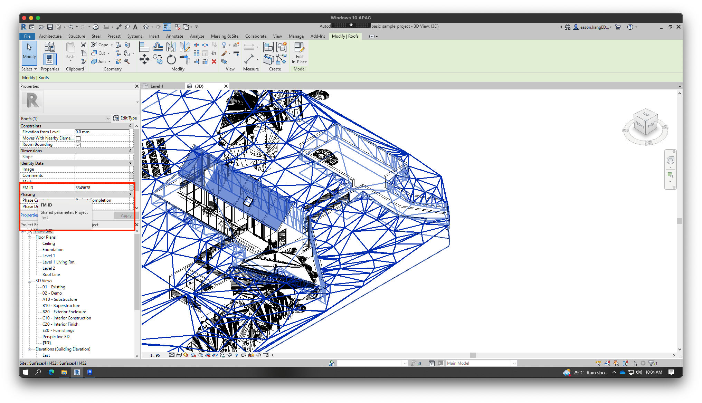
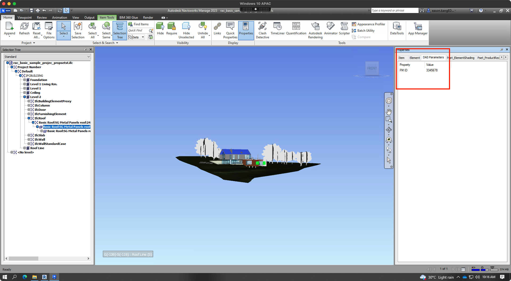
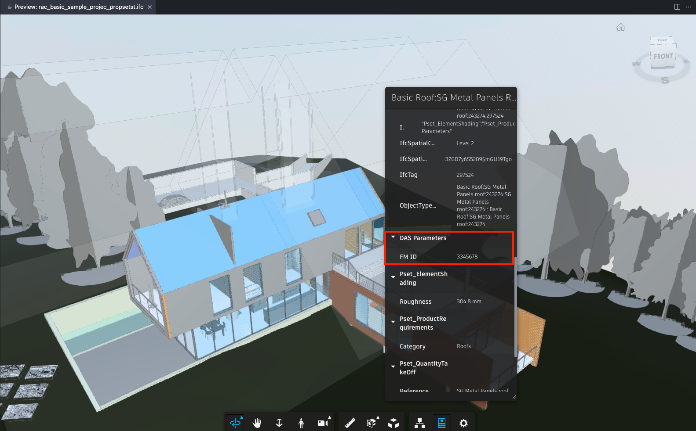

Today, we mention another publisher of Revit API tutorials and add-ins, some tips on handling IFC, and recent discussions on controlling the level of BIM elements:
According to its own mission statement,
TwentyTwo is creating forever free Autodesk add-ins that help you do more with less time and effort,
delivering efficient applications, as simple as possible, to handle tedious tasks and complex operations.
Besides the TwentyTwo blog,
they also share add-ins and API tutorials for both
Navisworks and
Revit.
Many thanks to Min Naung for putting together and sharing this material!
IFC Tips for APS and Forge
Wondering about your options when translating IFC model formats using the Autodesk Platform Services (APS), previously known as Forge?
Developer advocate Eason @yiskang Kang put together
a comprehensive list of FAQ and Tips for IFC translation of Model Derivative API that
might help, including and not limited to:
Overview of different available IFC conversion methods
Georeferencing in IFC
Troubleshooting locally
Testing with Navisworks
Testing with Revit
3rd-party IFC viewers
Show All Presentations
IFC Custom Properties in Revit
Eason also recently addressed another important IFC related question:
Question: Can the Revit API be used to add custom properties in an IFC file opened in Revit?
Can Revit export this IFC with those new properties?
Answer: There is no direct way in Revit to add custom properties to IFC.
However, it can be achieved indirectly through the following steps:
FM ID in IFC" title="Demo-added custom prop FM ID in IFC" width="600" height=""/>
Demo-added custom prop `FM ID` in IFC

Imported IFC in Navisworks
Content of user defined property set

Forge Viewer
Many thanks to Eason for the useful explanation!
Set Level Id of Existing Element
Returning to pure desktop Revit API topics, several discussions recently in
the Revit API discussion forum circled
around setting the level of an existing element, e.g.:
Question: I'm placing a new face-based family instance into my Revit model with the help of the NewFamilyInstance method taking (Face, XYZ, XYZ, FamilySymbol).
This works fine, except the instance does not have its level set to that of the host; it's set to -1 in the API and just left blank in the UI.
I tried setting the level like such using the placed instance LevelId property and also tried setting its BuiltInParameterFAMILY_LEVEL_PARAM.
Both throw an error saying the parameter is read-only.
Answer: On some elements, the element level can only be set during the creation of the element.
For that, I would assume that you need to use a different overload of the NewFamilyInstance method.
Please refer to this explanation by The Building Coder and a few recent discussions of related topics in the Revit API discussion forum:
For those who are still stuck with this problem even when using the correct overload:
public FamilyInstance NewFamilyInstance(
XYZ location,
FamilySymbol symbol,
Element host,
StructuralType structuralType )
It is essential to pass in the function parameter host as a Level and not as an Element.
Add a quick cast like (Level) myHostElement.
It should do the trick.
The Level parameter is created properly and is not read-only.
Keep in mind that this will screw up the offset values, but you can adjust those afterwards.
It would be very helpful if other developers could confirm this observation.
Thank you.